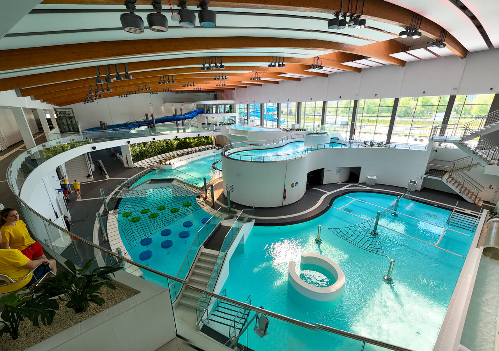
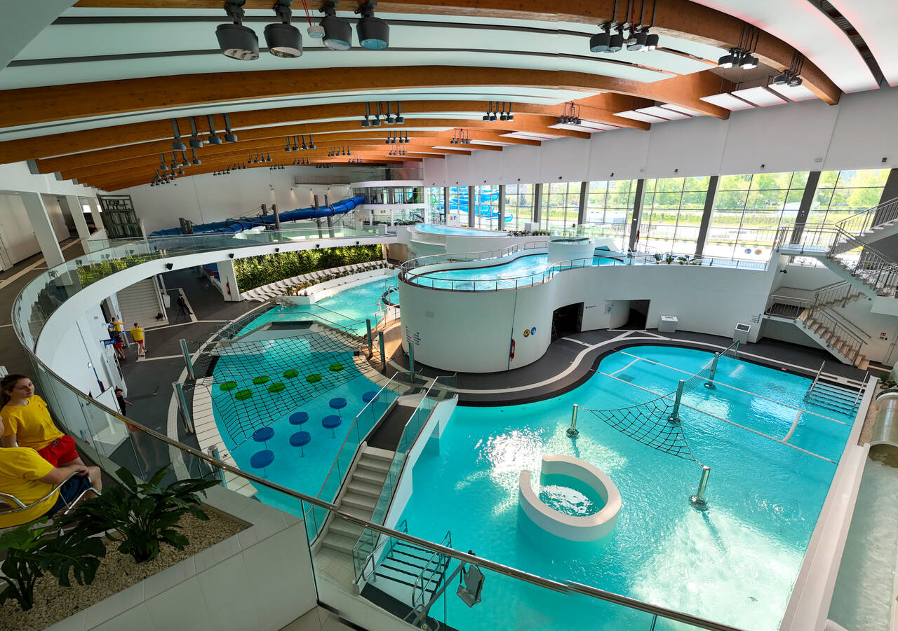
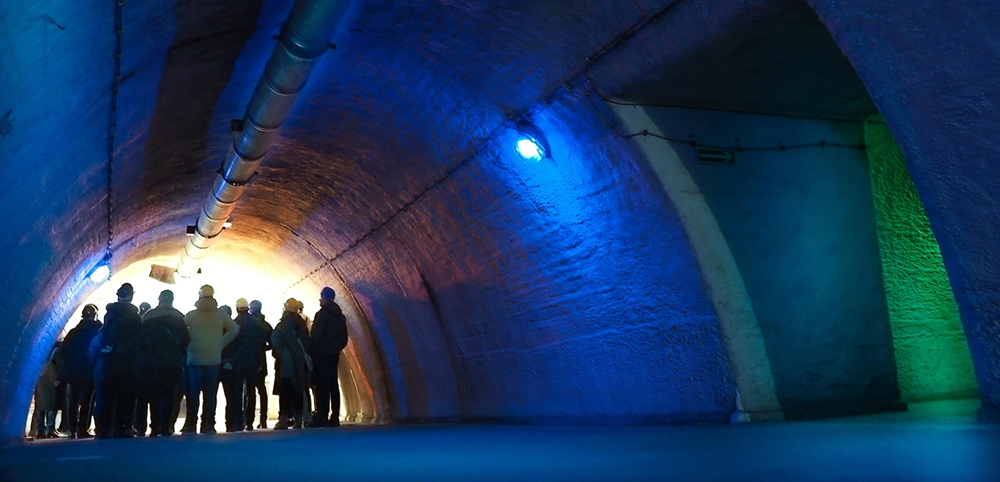
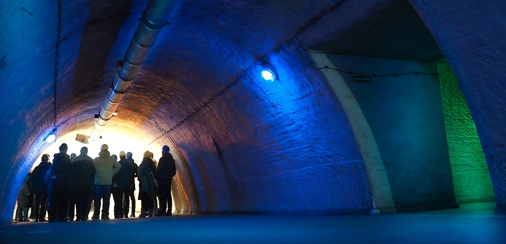
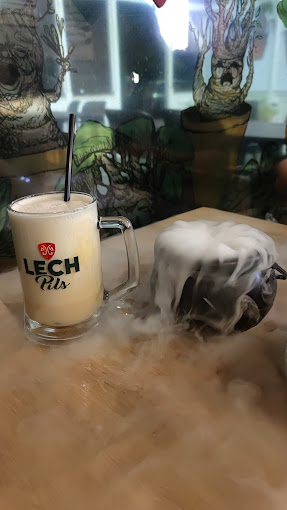
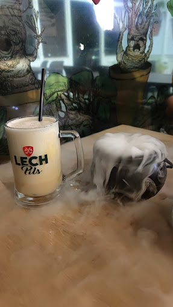
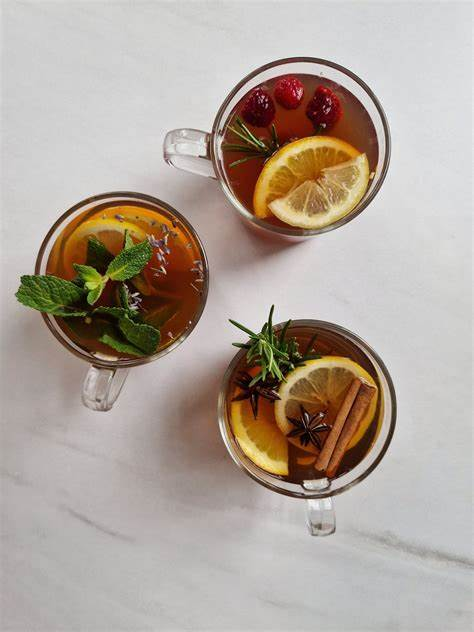
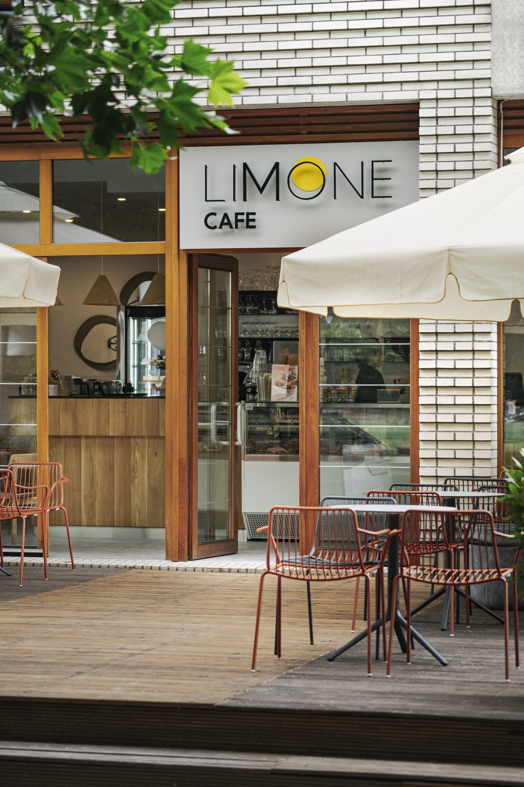
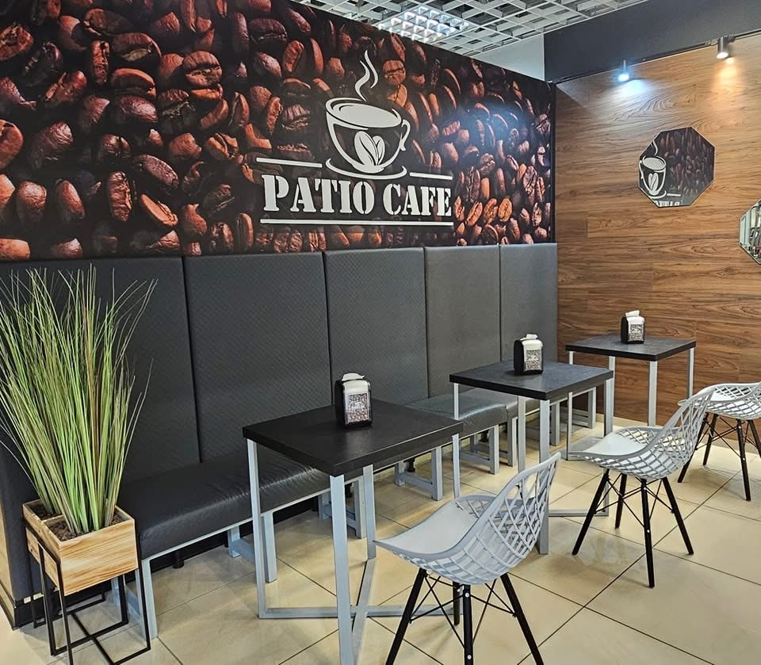
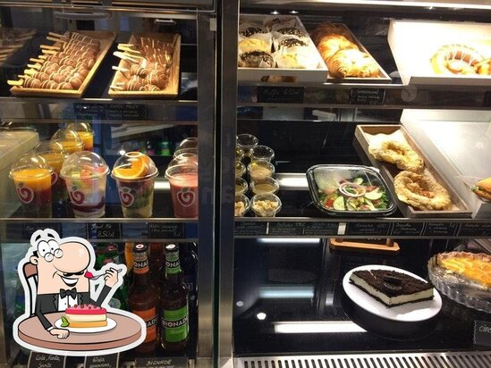

Zakochaj się w Szczecinie
Odkryj najpiękniejsze zakątki, smakuj lokalne przysmaki i poznaj magiczną atmosferę miasta portowego. Twój przewodnik po Szczecinie zaczyna się tutaj!
Poznaj SzczecinAtrakcje
Szczecin kryje wiele fascynujących miejsc – od historycznych zabytków po urokliwe bulwary nad Odrą. Kliknij, aby zobaczyć propozycje atrakcji, które warto odwiedzić.
Zobacz atrakcje → 



 

Restauracje
Wybierz się w kulinarną podróż po Szczecinie! Odkryj restauracje z lokalną i międzynarodową kuchnią, które zaskoczą Twoje podniebienie.
Zobacz restauracje →


 

Kawiarnie
Klimatyczne kawiarnie Szczecina to idealne miejsca na spotkanie z przyjaciółmi lub chwilę relaksu przy dobrej kawie. Sprawdź nasze propozycje!
Zobacz kawiarnie →



